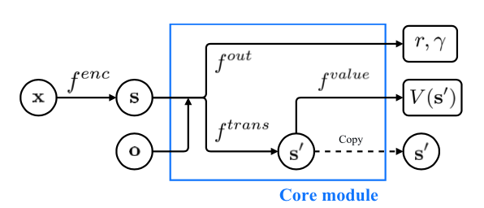
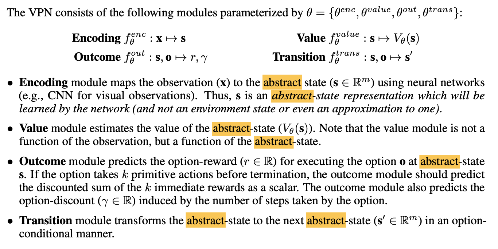
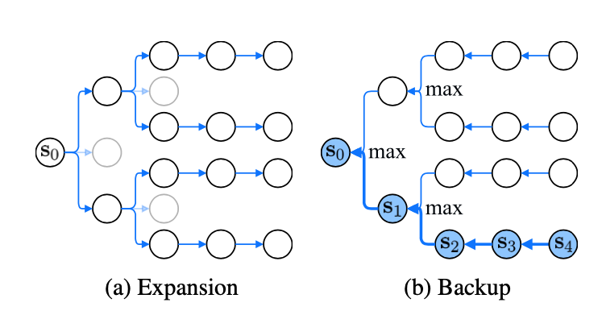

Value Prediction Network (VPN), which integrates model-free and model-based RL methods into a single neural network. In contrast to typical model-based RL methods, VPN learns a dynamics model whose abstract states are trained to make option-conditional predictions of future values (discounted sum of rewards) rather than of future observations. Our experimental results show that VPN has several advantages over both model-free and model-based baselines in a stochastic environment where careful planning is required but building an accurate observation-prediction model is difficult. Furthermore, VPN outperforms Deep Q-Network (DQN) on several Atari games even with short-lookahead planning, demonstrating its potential as a new way of learning a good state representation.
Model-based whilst during learning or acting, the agent uses predictions of the environment response link
Model-based reinforcement learning (RL) approaches attempt to learn a model that predicts future observations conditioned on actions and can thus be used to simulate the real environment and do multi-step lookaheads for planning.
- The premise is predicting the rewards and values of future states
- The old way needed to predict observations
- But proposed paper is designed to ‘predict future rewards and values directly without predicting future observations’
This as they say is a combination of learning the dynamics of an abstract state space to predict future rewards, as well as learning a mapping from the abstract state to current rewards and values. The time of computing rewards seems to be a differentiator. Either you predict in the future, or try to take best choices that give best reward for what you see now.
- But proposed paper is designed to ‘predict future rewards and values directly without predicting future observations’
What are abstract states?
This is a key question to answer, because anything contained in the abstract that I don’t understand will really prohibit my understanding.
The starting point of this work is the premise that what planning truly requires is the ability to predict the rewards and values of future states. An observation-prediction model relies on its predictions of observations to predict future rewards and values. What if we could predict future rewards and values directly without predicting future observations? Such a model could be more easily learnable for complex domains or more flexible for dealing with stochasticity. In this paper, we address the problem of learning and planning from a value-prediction model that can directly generate/predict the value/reward of future states without generating future observations.
Abstract states are likened to the hidden state of a RNN. And just like RNN’s the VPN can be unrolled in time to predict future rewards. This is exactly how it performs planning.
What is a semi-Markov decision processes?
A understanding of MDP helps here. From Wikipedia: MDPs are extensions of Markov Chains, such that At each time step, the process is in some state , and the decision maker may choose any action that is available in state . The process responds at the next time step by randomly moving into a new state , and giving the decision maker a corresponding reward .
Semi-Markov decision processes (SMDPs), generalize MDPs by allowing the state transitions to occur in continuous irregular times. In this framework, after the agent takes action a in state s, the environment will remain in state s for time d and then transits to the next state and the agent receives the reward r.
Model Architecture
The model is summarized nicely in the paper in Figure 1.

There are four functions all relating to the abstract state-space. Drawn from the paper below:

Planning
The algorithm unrolls the core module and builds an expanded tree, finding the maximized Q value predicted by the VPN to plan for future actions.

Experiments section
- Does VPN outperform model-free baselines (e.g., DQN)? 2) What is the advantage of planning with a VPN over observation-based planning? 3) Is VPN useful for complex domains with high-dimensional sensory inputs, such as Atari games?
The short answer is Yes. In Atari, VPN outperformed the QDN baseline in 5/7 games. See the paper for plots.